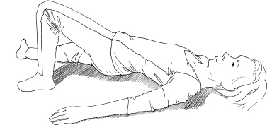

Feldenkrais for Actors
On improvisation:
The point is that you must start with the smallest little thing, start very slow and let that develop. You may not have a whole idea… you just follow your own little lead. It’s precisely what you are saying: decrease intensity… When we come in with our own level of intensity we can’t help but get into our habitual ways of doing things, but when we change that and slow ourselves down, then we have a greater capacity and greater chance of changing, of discovering new avenues.
A member of El Teatro Campesino
in discussion with Moshe Feldenkrais54
More Skill, Less Effort
By the end of the last chapter we were getting into the notion of doing less, decreasing intensity and using less effort in order to feel more, learn more, stand more easily and be present and ready to play. So now it really is time to get in there and have a proper look at what that means. Many actors would appreciate the principle ‘less is more’ – watch Mark Rylance’s performance as Cromwell in the television adaptation of Hilary Mantel’s Wolf Hall for a prime example of expressing a great deal by doing very little. As a universal rule it could also be somewhat constraining. In life we respond to different situations with different levels of activity, effort, urgency, ease or tension. Different characters respond differently too. Jacques Lecoq expresses something of this in his famous description of seven levels of tension in performance.55 There are also shows and films that demand a big character, or a bold, even epic style of performance that invite the actor to ‘do’ a lot or to push their boundaries. So what does ‘doing less’ actually mean?
Playing big or epic characters and taking risks is not the same as doing more than you need. The amount of effort you use needs to be appropriate to the situation rather than compulsive. To shift sideways for a moment: in sport, some things do take a lot of effort. You can’t run a marathon or even once around the block without making an effort. You can’t leap or fight or lift a bag of shopping. Every time you do anything muscles have to contract, and that takes energy (or effort). It’s just that there is an appropriate amount of effort for a given movement, activity or moment of performance – big or small – and that is the crucial issue. Very often we do more than we need because we are not skilful enough, because we lack clarity about what we are doing, or because we just think we need more effort than we do. Sometimes we are stuck in the idea that the greater the effort, the greater the impact or the benefit.
On the beach with my daughter and her friends recently I was dragooned into a mini-game of baseball, which I have never played before (and it’s a very long time since I even played rounders). One of the parents organising the game happened to be a PE teacher and knew what they were doing. I was determined not to shame my daughter so made quite a deal of whacking the ball really, really hard. At least, I thought I did, but what actually happened is that I made a great demonstration and a huge effort to whack it and completely missed. It took several goes like this till the PE teacher took pity and said, ‘Don’t swing so much and stop trying to hit it so hard – just watch the ball and aim to make contact with it, that’s all.’ I did. It went sailing off quite a distance just on the rebound: reducing the intensity enabled me to be more accurate. The lesson for an actor: less unnecessary effort, less overt demonstration of intention, and more simple clarity of execution.
Skill is often more about inhibiting unwanted movement and being more accurate than doing more, whether you are thinking of a big gesture/action or a tiny one. Think of the little baby in Part 1. He waved his arms and did a lot of extraneous movement until he could feel how to limit the unfruitful aspects of the movement and direct his arm to reach out and knock the toy down. I am sure you can think of your own examples.
The aim is healthy, powerful, easy and pleasurable exertion. The reduction of tension is necessary because efficient movement is effortless. Inefficiency is sensed as effort and prevents one doing more and better.
Moshe Feldenkrais56
If a movement is well done it should not involve a sense of effort in the organisation of the movement itself. It should not be laden with tension that does not serve the intended action. This doesn’t mean that you should not ever exert yourself or that it should feel like nothing to run a marathon. If you have to exert yourself just to put one foot in front of the other (i.e. in your basic running gait), it is an indication that your fundamental physical organisation is not good enough – you will not run as well or as fast or be able to keep going for as long as you otherwise could. It’s the same with a big part in a show or a film. It may take a lot of energy, concentration and commitment, it may involve finding a larger-than-life character or require a grand or epic style of acting, but if you strain at it and do more than you need – even by a little – in a gesture or in your whole way of being, then that’s all we are going to see: strain and effort. You are going to cloud your real intention and you will not communicate effectively or believably to your audience. (Unless what you want to communicate is strain and effort, of course, but then you still need to be able to choose that as an option, rather than it simply be compulsive because you can’t do anything else.)
Using skill and efficiency rather than tension and effort is of great importance, so that any specific choice the actor makes will read, and is not lost in a system that is habitually strained by being at cross purposes with itself or blocked by inability. As Monika Pagneux says, ‘Gesture is a silent language that writes in the space and its writing is the same as literary writing [quoted from Paul Beluge]. You must be able to read a gesture or you can’t understand the story.’57 And I would add that it is when the gesture is not clear in its intention or well-formed in its execution, or clouded with extraneous effort, that the audience can’t read it. Those habitual tensions and efforts make it harder to feel what you are doing, harder to notice fine differences, harder to hear what other actors are doing and harder to make a finely nuanced response. It’s that background noise again. There is even a nice psycho-physical principle to explain it which Feldenkrais talked about a great deal and which informs his Method. It’s not new and there have been updated versions, but this idea was first expressed over one hundred years ago in a mathematical formula that shows how much sensitivity you lose according to the amount of ‘noise’ already going on. It is called the Weber Fechner Principle and it goes like this:58
Change in Sensitivity=K (change in I/I)
or S= Log I + Constant59
…which I confess means nothing me.
What does this principle mean in ‘real life’ terms? If you pick up a book you can feel the weight of it on your hand via the amount of effort generated by your musculature to hold it up. But if you are holding up a piano and someone puts a book on it you won’t be able to feel the extra weight of the book because of the ‘noise’ from the effort your muscles are already making to hold up the piano. This is a fairly extreme example, but it works for more subtle applications too. Feldenkrais said that the proportion above which you could feel a difference worked out at about an additional 1/40th of the effort you are already making, so the less background effort you are already making, the smaller the differences in levels of work you do additionally that you are able to discern. Strictly speaking, it’s not a proportion of the effort itself but of the ‘sensory excitation’ generated by the effort: I have called it ‘noise’.
Weber Fechner: The threshold of sensitivity to sensory excitation is a certain fraction of the overall excitation already present… So you want people to move thoughtfully and gently, noticing everything, not pouring all kinds of sensory excitation into the system, then they can notice all sorts of subtle changes.
Barratt Dorko, physiotherapist60
Or:
If you keep shouting all day what change will there be? There will be a change – you will be hoarse!
Moshe Feldenkrais61
For example, imagine an actress who carries considerable tension in her shoulders, chest and belly. She looks as if she never breathes out, and a director has cast her as an angry young woman because she has that look of having something held in, something brewing inside. Now the director wants to see little glimpses of that anger, not everything at once, but the actress just doesn’t seem to be able to get it: she always does too much or nothing, she has no sense of what could lie in between. ‘No, save it, save it for later,’ the director keeps saying. ‘We just want a flicker here, almost imperceptible, and then a tiny flash there, so we get the idea of what she is hiding. Then we can have more here, and then really let it go for just that bit there.’ The actress thinks that’s pretty much what she’s doing but the director is getting frustrated because she sees no difference, just the same burst of anger. The actress can’t differentiate between states well enough because there is too much background noise (sensory excitation) generated by the tension she carries all the time. She has to do at least 1/40th more than the background noise to feel what she is doing, which in her case turns out to be quite a lot. That means she just can’t feel or find those kinds of subtle shifts: she can only make bigger jumps. And before you say, ‘Well, that isn’t me’ – how do you know? This is all of us to some degree.
Or take the actor who has been employed because they want someone who can move well. He is an acrobat, damn it, of course he can move well! He is strong and powerful and skilful in many ways. He can leap and flip and do all sorts of tricks, but he does them with impetus and force. His quality of movement lacks delicacy, not because he is not flexible in his joints but because he is habituated to a level of effort that he uses in almost everything. So when it comes to taking the hand of the actress his character is meant to love, he does exactly that. He just takes it. We see no sensitivity in that gesture. ‘Softer, more gently, more hesitant, more tenderness please,’ asks the director. ‘Look, she is soulful, she is delicate, you want to know what it is just to feel the softness of her skin.’ The actor lifts his shoulders, holds his chest, screws his face up into an expression of anxiety, holds his breath and stretches out a stiff hand to grab hers in semi-slow-motion. It is a performance of tenderness, but it is not tenderness, which is a nuance not easily available to him. It is not that he doesn’t get what the director is saying – he certainly isn’t stupid – it’s just that once again the background noise is too high for fine differentiation in the quality of his acting. I am not saying this applies to all acrobats, but I am saying that some degree of this lack of noticing is there in all of us.
Clown training teaches a kind of deep listening to one’s self and the audience. Feldenkrais teaches deep kinaesthetic listening. Both practices will encourage you to listen to yourself and respond gently and authentically. Try and force a funny thing in clowning and you discover very quickly how delicate humour can be. Try and force a movement in Feldenkrais and you discover how little force can actually accomplish (aside from pain, force is great for accomplishing pain!). You learn very quickly how the delicate and small make the big changes. In clowning, your biggest success might come from the way you open your eyes. In Feldenkrais, your biggest improvement might come from the same.
Emily Davis62
Ways of Working Less
In a Feldenkrais lesson, the emphasis is on lowering the overall state of tonus (the base level of activity in the muscles) – or we could say lowering the intensity – so that you are able to feel more accurately what you do. This will help you to notice the difference between small movements in order to learn. And in the long run, it will enable you to develop the ability to live, behave, do – and act – with more skill, more efficiency and less effort overall, even (or especially) if what you want to do involves very energetic or demanding activity. The invitation to lower the intensity is part of the reason so many Feldenkrais lessons happen lying down, the movements are small and you are invited not to strain. As per the Dorko quote earlier: it lowers the amount of ‘noise’ in the system so you can ‘hear’ (feel) what’s going on properly.
The Method enables you to learn how the whole of you works together – in synergy – to enable something to happen more easily (so, again, with less noise). You learn to spread the load of the work through the whole of you, so everything works to a purpose with a more even tone, rather than parts of your musculature working hard in isolation or even fighting other parts that are (unintentionally!) working against the intention. As Monika Pagneux says about what she learnt from Feldenkrais:
I was fascinated: suddenly I feel the movement running through my body. Yes, I research and I work with the body for years and years… and suddenly I feel. It was not only in repetition of forms… it was in a deep relationship with my brain and my whole body. When you move and you lift up the arm, your whole body is engaged. The whole body… all together. It is not a part here and a part here.63
Lie on your back on the floor. Bend your knees and plant your feet.
Lift your head a little. Feel how heavy your head feels, how easy or difficult it is, what you do to lift your head. Try and speak while lifting your head – how does it sound?
Interlace your fingers and bring your hands behind your head. Use your arms to lift your head. Easier? Probably.
Notice if you have your elbows out flat or if you bring them forward to make a hammock of your arms. Try the opposite version and see if it makes a difference. Notice that elbows out gives you a flatter back and elbows forward rounds your back a little. Which one makes it easier?
Where do you look with your eyes? Notice that looking down towards your groin as you lift your head makes you rounder and looking at the ceiling encourages you to keep a flatter back. Which helps?
Rest for a moment and just breathe. What moves when you breathe? Belly? Lower ribs? Chest? Upper chest? For a moment direct your breath so that the ribs lift and open when you breathe in and then sink and close when you breathe out. Put your hands on your breastbone/ribs and feel the movement they make. (This is not about correct breathing, this is about feeling what your chest can do.) Notice that breathing in like this lengthens and expands your front, and breathing out collapses and shortens it
Keep one hand on your chest and one behind your head. Breathe out and lift your head at the same time. Encourage the breastbone to move in the way it is going on the out-breath. Feel where your weight shifts further down your back as your head comes up. Allow yourself to listen to those shifts of weight, allowing your back to lean on and find support from the floor in each place. Do the opposite. Breathe in as you lift your head – a big breath right into your chest up to the collarbones. It’s likely that your back will come up more as one piece. Go back to the out-breath as you lift the head. Which is easier?
At this point it’s worth checking what you are finding. If you are used to doing sit-ups in a gym, your way of doing them may feel ‘easy’ just because it is familiar. However, some ways of doing sit-ups are designed to be difficult so that you work your abdominal muscles more. The ease and efficiency we are looking for here might be asking for something different, so go slowly and carefully.
Add in lifting and bringing your knees up towards your chest several times as you lift the head. Use your arms and direct your eyes in the way that makes your back rounder. Bringing your knees up makes you even rounder. Everything is going together to make your back round now: breath, eyes, synergy of the muscles in the front and back.
Try the same thing with your feet on the floor, but just rolling the pelvis up a little towards the waist (12, don’t lift it, just roll it up as in Lesson 5: The Pelvic Clock).
Now leave your feet on the floor and lift your head without your arms. Did your head get lighter? Speak with your head lifted. Is that easier too?
Is it different in standing too?
In this lesson you learn how to use the whole of you in synergy to lift the head more easily. This idea is present in every Feldenkrais lesson: how do the different parts of you relate and not fight each other to enable you to do more with less strain.
But there was another aspect to lifting the head if you noticed: feeling where you lean on the ground to help support the head in the air. For something to be lifted it must have support. I talked about this in the section on being grounded. If there isn’t accurate enough support through the structure from the ground, more muscles have to engage to help out. In a more general way, we lie down to sleep, sit down to rest, prop ourselves up on ledges (and bars!) to give our muscles a break. It’s obvious put like that, but we are not always able to find the more specific support we need in standing and movement. Recruit the support of the ground well and your musculature can work more evenly and accurately. We come back to what is behind being grounded.
However, let’s take it further. When you are clear about how you contact the ground, you can recruit that support to help transmit force through the densest material in the structure (bone) – which will push the next bone along into movement depending on the angle the bones meet at the joint. Using this principle enables you to create movement with less effort.
Lesson 7: Using the Ground
Lie on your back and bend up the right knee and plant the right foot. Left leg is long. Do something that allows you to lift the right side of the pelvis and roll to lean more on the left side of the pelvis. Don’t lift the whole pelvis off the floor, just roll it to the left, leaving both shoulders on the floor.

What did you do to make that happen?
1) Using more of you and letting the movement flow through helps:
• How high up your back and ribs can you turn a little as well to help out? Come and go many times, allowing the movement to travel a little higher up your back each time (without straining, keep it easy and gentle). Listen to how your ribs can gradually join in with the twisting movement – right up to your collarbone! (Both shoulders stay on the floor if possible.)
2) Using the ground can help:
• What do you do to make the movement? Do you think of lifting the right side or finding support from the left?
Try lifting the right side and feel how much work you do.
Now don’t think of lifting the right side but think of the left side supporting you.
Use your ribs as a ladder and think of leaning on some higher ‘steps’ in the ladder towards your upper chest and left shoulder each time. The right side will lift anyway if you lean on the left. What’s the difference in your sense of effort?
• How does your foot meet the ground and how do you use it?
Do you remember Lesson 5: The Pelvic Clock, where we asked where the knee was directed and which part of your foot you pressed with? Try it out and see what helps direct the movement upwards towards the top of your chest.
Your knee could flop to the right or stay towards the ceiling. It could move a little away from your head as if someone pulls it, or stay more or less where it is. Which version allows you to connect the whole foot clearly to the ground so that you can make use of the ‘ground forces’ (see p. 103) to send the movement away from the floor and up into your chest?
• How do you initiate the movement?
Squeeze the buttock (gluteal) muscles in the right side to lift that right side. Notice the level of work and your sense of contact with the ground. Now don’t consciously squeeze the buttock. Once again, look for a clear contact with the ground, so that the movement is directed away from the floor, up through the skeleton to your upper chest and shoulder as one integrated movement. It is not that your musculature won’t work – of course it will. You can find a more even distribution of work that will be more economical and enable a simpler transmission of force.
Is there work in the buttock muscles? Of course there is, but not the same as when you actively squeeze them. They will just do what they need to as an integrated part of your musculature in response to your connection with the ground. But not more. Some people overwork in their legs and gluteal (buttock) muscles, some pull their pelvis over with their back muscles, some activate their abdominals. It can be a relief to find you don’t need to.
Sometimes people find it tricky to feel their contact with the ground at all, let alone how it relates to creating movement. If you are not sure, just lift the right foot a little and drop it. Let it hit the floor (if that feels okay to do). You will feel the movement ricochet through the skeleton. Now stamp a little and then find how little you need to stamp, or even push. Now think of not actively pushing. Instead simply notice how your foot connects to the ground in such a way that a force can travel upwards through you and helps your pelvis roll to the left.
Spreading and balancing the work, using your contact with the ground and transmitting force through the skeleton, as above, all help you do more by doing less, but what these lessons also do is change your image of the movement. Sometimes we just have the idea that it will be hard work, and we act that idea out. Making extra effort can be so ingrained you have to find a way to catch yourself doing it. Often we have anticipated it already before we even start!
Just Starting…
Go back to Lesson 6: Lifting the Head. Lie on your back. Bend your knees, interlace your fingers behind your head.
Lift your head. Remind yourself how you do it, how it feels.
Now don’t lift your head – imagine you are going to lift your head and then stop before you do. You will feel how you prepare the movement.
What did you do to prepare? Did you tighten up and hold your breath at all? Or did you feel where your back would press the floor differently, what ribs would need to bend in the front, where your eyes would look, how you would breathe?
Go to lift your head again, but don’t lift it. Instead imagine the movement. How easy is it – how effortless? Feel where in your chest you need to sink, what place will find more support from the floor or peel away from the floor, how you will breathe, soften and fold, where you will direct your eyes to make it really easy and where your elbows will go to help you round. Notice any moments where you tighten unnecessarily or hold your breath. Do you need to? Is it possible to take out of your image of the movement the idea that you need to work hard to lift your head?
Actually lift it once again and feel how it is now. Is it easier? Does it mean you don’t make an effort to lift the head? No. Of course you do. But only the appropriate amount.
At the start of this part, I said many actors would appreciate the phrase ‘less is more’, but I didn’t say why. We have already covered quite a bit of ground in answer to that, but there is a little more to say about what happens to the audience when an actor does less. Remember my suggestion that we are all busy reading people and situations so that we know how to think and behave? We will all do it according to our own experience and world view, we will do it rightly or wrongly or anything in between, but we will do it. It’s the same kind of idea here: human beings are built to make meaning out of situations. Our brains are keen to organise and make sense of what we experience.
A well-known example is this image: I3
It reads one way seen like this: I2, I3, I4, I5
And another seen like this: A, I3, C, D
The literature around perception and how our brain orders the world and makes meaning is vast, ranging from Merleau Ponty to John Berger and beyond, and I am not going to even dip my toe in it. It is enough to observe that we are adept at making meaning – and will do so out of whatever clues we have. Take a photo of a reasonably expressionless face and see how you read it differently depending on what pictures you put before it and after it. If you use images of sun-dappled woodland glades and flowers and a group of people having a picnic, the face will seem to be expressing a different emotion than if you use images of violence or death around it. You can get the same effect putting different music behind an image on a screen or a scene in a play. It’s one of the fundamental ideas behind any montage or editing technique, from Battleship Potemkin through Hitchcock and onwards. In the examples I gave, the picture of the face itself does not need to show anything as the watcher will always do the work to create meaning from the context.
I remember doing an exercise with director Neil Bartlett where, one by one, we just sat in a chair, looked at the door for several minutes, then stood up slowly and went to open it. We did nothing else: thought as little as possible, acted as little as possible, kept it as simple as we could manage. Everyone watching had a story for what was going on, for, as John Wright says, meaning rushes into a vacuum. The audience does the work. The power in the actor doing less is that the audience, busy finding meaning, often sees and experiences more.
Neutral Mask
This exercise also sounds like something you might do if you work with neutral mask. Neutral mask is an excellent tool in exploring how you can let go of unnecessary effort and do less. It is a great partner to Feldenkrais work. The neutral mask was developed by Jacques Lecoq from Copeau’s ‘Noble Mask’,64 and is a full, plain white or leather mask with a very simple, well-defined, symmetrical face. This invites utter simplicity of movement in the wearer and is wonderful for revealing the gaps in the person’s ability to answer that invitation (unlike the character masks that are sometimes very expressive and seem to demand a pronounced style of movement and behaviour).
Jacques Lecoq developed a very specific ‘elemental journey’ for teaching with neutral masks, which is excellent and the best known way of working with them, but they are also very useful in a number of other ways. Think of Copeau’s game in which an actor stands in front of the audience with the idea of being simple and at ease, and the audience’s job is to register how much difficulty the actor has just being there. In a workshop John Wright and I were teaching together, we were playing that game. A few minutes in, John slapped a neutral mask on the player and immediately the actor quietened down: they stopped twitching, they became more still, it was much easier for them to be there. With some actors, the difference was quite shocking. The mask took the pressure off them to ‘do’ or to be busy with trying not to do. They could watch us from behind it. The tables were turned. They were at ease. Much of their tension dropped away. This was Copeau’s discovery: he put a handkerchief on the face of a particular actress and the tension and anxiety that had been getting in her way disappeared. He then developed simple white masks which he called noble masks, because they were like the masks the nobility wore to protect them in the street.65 The masks were not for performance but for learning a different way of being on stage.
A neutral mask cannot suddenly remove every aspect of habitual tension in an actor. It just lessens the demand on them and so changes the game. It removes the awkwardness and anxiety that are to do with performance, with being scrutinised and with being asked to do nothing, which can be considerable. Being asked to be on stage doing nothing is, after all, the very opposite of Meisner’s technique of giving you a task in order that you can stop thinking about yourself. Wearing the mask has, in some ways, a similar effect.
The mask will not take away your deep, habitual patterns. In fact, it also does quite the opposite: it reveals them. As Lecoq says:
The neutral mask puts one in touch with what belongs to everyone, and then the nuances appear all the more forcefully. These are not the nuances of character since there is no character, but all the little differences which separate one performer from another.66
The demand is for the actor to match the simplicity of the mask, but while the difficulties of the moment may drop away when the mask goes on, the deeper, older, more habitual tensions – twitches, particularities of stance and movement – become very loud: the attack with which a person moves, the fluidity or lack of it, where they move from, how they hold their shoulders or any of the rest of themselves, the way they walk or where middle or ‘Home’ (or ‘neutral’) is for this person, are all there to be seen.
John Wright told me that he spent a long time trying to explain to a Balinese mask-maker (and priest and performer) called Imadi Bagus Alit what a neutral mask should be like. It was a difficult job. Eventually Imadi gave the mask his own name: ‘man about to do something’. For me, this is perfect. In Part 2b on posture, we said ‘Home’ or ‘neutral’ is a place from which you can go anywhere immediately without a preliminary rearrangement, and that this is a seminal idea in the Feldenkrais Method: that muscular tone can be so evenly distributed that a person can move easily in any direction at any moment (and change their mind at any moment too). And it turns out that this is a prime quality of the neutral mask as well: about to smile although not smiling, and at the same time about to swear though not swearing. The moment of evenness and readiness to go anywhere: just not gone yet. Through working with the neutral mask in many different simple tasks, the actor can find that quality of being available and ready for any story – without the story being already told.
For this they will need to be able to simplify their movement, but while the mask will point the way and enable to some degree, often more is needed – and that is where Feldenkrais is a great partner. Go back and re-read Part 2 with this in mind: for ‘middle’ or ‘Home’ read ‘neutral’ and you will get part of the story. Go forward and read Part 3b on power and economy, and you will get more of it. Neutral, like good posture, is not a set of rules or a constraint that is limiting, but a place people come to when they are truly in the middle and have all the possibilities of going this way or that way – in terms of colour, quality, speed and style of movement. It is when an actor can get out of their own way enough to just do the action at its simplest with the minimum of story attached – not to be a robot stripped of their unique qualities, but a living, breathing person who contains all the contrasting and varied stories they might want to tell. ‘Man (or, of course, woman!) about to do something.’
Two people come to mind as examples. One a beautiful, tall, elegant actress who it was hard to fault. She didn’t seem to contain excessive tension, but there was something she brought with her that I could not put my finger on but that was getting in the way and seemed to colour everything she did. When she put the mask on and turned around slowly to face us, I nearly jumped and wanted her to take it straight off. I felt like it was revealing an aspect of her which was not safe to be seen – in front of us, suddenly, was a terrifyingly vulnerable lost child. Of course I don’t know how much that was really something of her or just how it was that day, but that was the story the mask revealed as it showed up lack of skeletal support, the lack of tonus and the ways she compensated. It was interesting that all this was not as immediately obvious without the mask, as she had obviously developed ways of concealing it, and yet it still underlay and quietly undermined everything.
The other, at the opposite end of the extreme, was an energetic, vibrant and quite funny actress who simply looked frenetic and anxious in the mask. All her movements were too sudden, too staccato and too small for it. What had read with a certain charm when accompanied by her jokey smile simply didn’t work without. She was unable to let go and meet the invitation to find anything simpler. She hung on to her story with the mask on, and now it looked desperate. Did it matter given she had something that sort of worked without the mask? If she only ever wanted to play sudden, staccato, jokey characters in the same way, maybe, but it allowed her no room for anything different. And at some point that desperation would become visible and get in the way.
John and I followed up the initial mask experience with The Pelvic Clock (p. 106) and then asked our actors to stand in front of an audience again. It was easier for everyone to meet the demand of the mask, or to be in front of the audience simply and quietly without it. This lesson can enable an actor to shift their patterns enough to find a different middle, a simpler, more grounded Home, a more effectively neutral place, as you may have already discovered for yourself. But this one lesson is not enough to transform someone for ever on its own. There are very many lessons that have this kind of effect in different ways by addressing different aspects of movement. You will find a few more as the book progresses.
I want neutrality only to free you from the inhibition of having one speciality.
Moshe Feldenkrais67